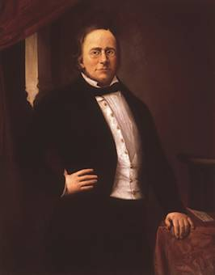

Daniele Manin
 Manìn, Daniele. - Uomo politico (Venezia 1804 - Parigi 1857). Fu promotore di un'opposizione non clandestina all'amministrazione austriaca e divenne presidente del governo provvisorio di Venezia dopo l'insurrezione popolare e la cacciata degli austriaci. Dopo la capitolazione della Repubblica di Venezia, andò in esilio in Francia; aderì poi al programma unitario - monarchico di Cavour e fu tra i fondatori della Società nazionale. Si laureò in legge a Padova, attese alla sua professione e agli studi, interessandosi contemporaneamente alla politica. Contrario alla pratica cospirativa della Carboneria e delle altre società segrete, dalla metà degli anni Quaranta, Manin preferì impegnarsi in un'opposizione "legale" all'amministrazione austriaca; questo tipo di lotta culminò nella presentazione all'imperatore di una petizione per rivendicare il rispetto della nazionalità italiana nel Veneto e la concessione dell'autogoverno. Imprigionato dalle autorità austriache con N. Tommaseo nel gennaio 1848, Manin fu liberato dal popolo.